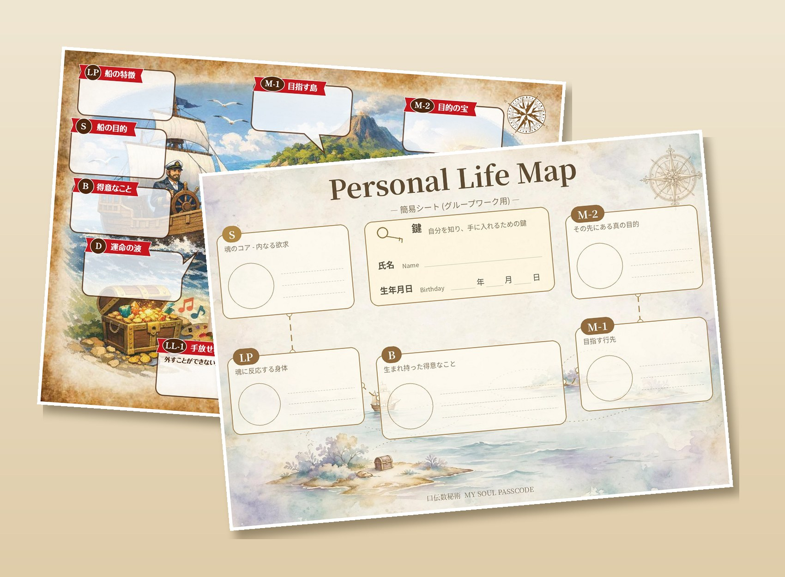
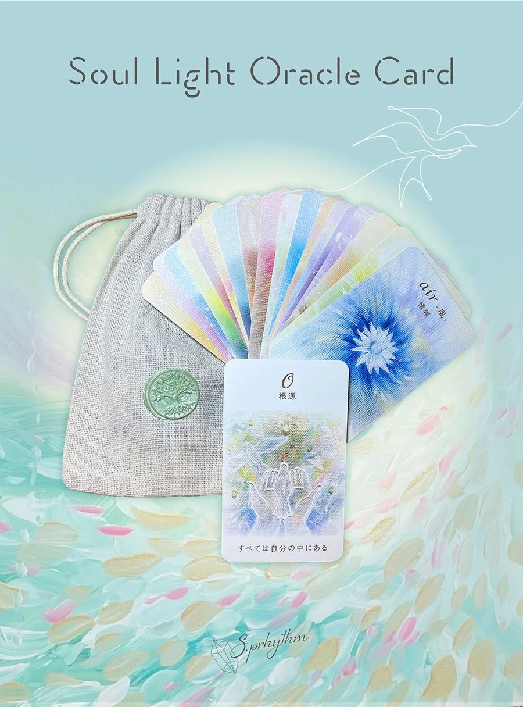
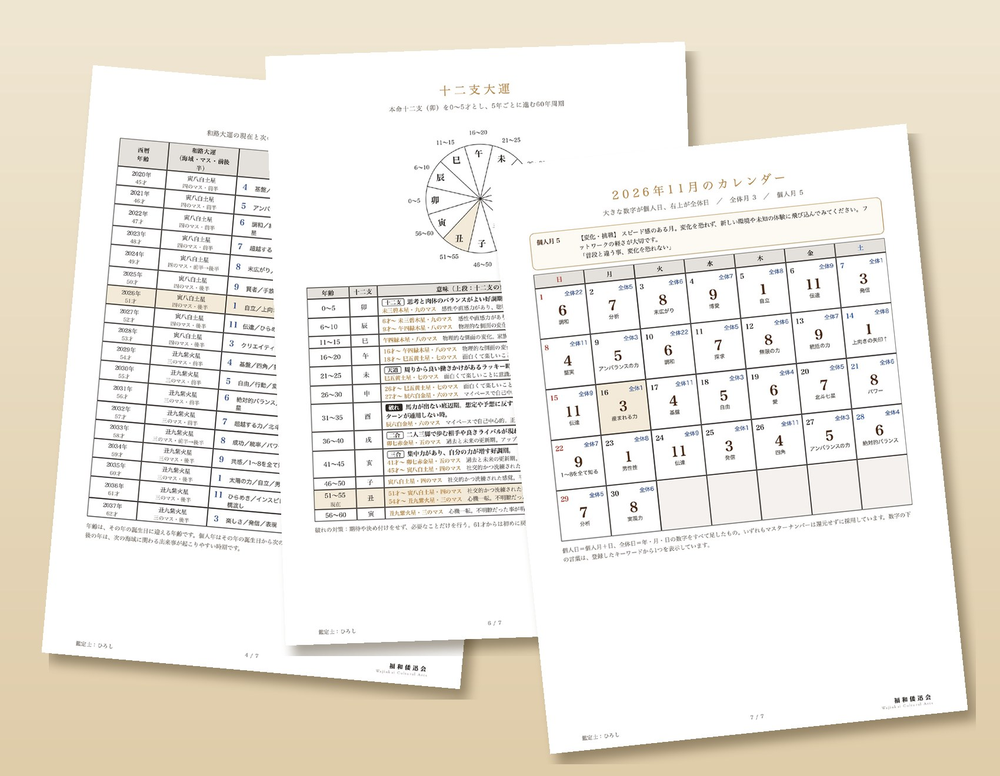

口伝数秘術 MY SOUL PASSCODE
数秘とカードで読み解く、自己理解の対話
名前と生年月日を鍵に、あなたの「人生の海図」を読み解く鑑定です。
MY SOUL PASSCODE は、口伝数秘術を土台に、鑑定士・福田ひろしが独自に組み上げた鑑定です。
氏名と生年月日から導き出す10の数字を、「Personal Life Map（人生の海図）」として、1枚の宝の地図として読み解きます。
占いの手法を使いますが、未来を言い当てるものではありません。数字やカードを手がかりにご自分の設計図を読み解き、対話を通して今を理解し、次への備えを一緒に考えます。
今の課題や、これまでの出来事と照らし合わせながら、数字の意味を自分のこととして理解していく。そのなかで、忘れかけていた自分の感覚を取り戻していきます。キーワードや、数字同士のつながり方は、私が感じた内容でお伝えします。けれど、実際に考え、使っていくのはご自身です。使うこと、活かすこと。口伝数秘は、知識として知っているだけでは、ただの学問で終わってしまいます。使ってこそ、活かしてこその術なのです。
口伝数秘は、計算方法・アルファベットの変換表・採用する数字が一般的な数秘術とは異なります。そのため、同じお名前・生年月日でも、一般的な数秘術とは別の数字が出ることがあります。
2025年5月に鑑定を始めて以来、延べ80名以上の方の鑑定を行ってきました（2026年11月現在）。
鑑定では、次の10要素を読み解きます。

奥がフルバージョンの海図（10要素）、手前が簡易版シート（5要素：LP・S・B・M-1・M-2）です。鑑定では、海図から各要素の数字を読み取り、ご自身の手でシートに書き込みながら進めます。グループワークや「数秘のお茶会」では、簡易版のシートを使います。
| ライフパス（LP）のみ | ¥1,100 |
|---|---|
| 3要素（LP・B・M-1） | ¥3,300 |
| 5要素（LP・S・B・M-1・M-2） | ¥5,500 |
| 7要素（LP・S・B・P・D・M-1・M-2） | ¥6,600 |
| 全10要素 | ¥8,800 |
どの要素から読むか迷うときは、LINEでご相談ください。
申込フォームへGoogleフォームが開きます
LINEで相談・質問する公式LINEが開きます

¥1,000
その場で必要なメッセージを受け取る、シンプルな引き方です。
¥2,000
捨てるもの／大事にするもの／進む方向性
¥3,000
捨てるもの／大事にするもの／進む方向性／現れる壁／乗り越える方法／現れる未来／全体を受けてのメッセージ
口伝数秘の周期（全体と個人、短期から長期まで）と、和路大運・九星大運・十二支大運（6〜10年の周期）を重ねて読みます。
現在の周期を読み解き、次の周期が近づいている場合は、そこへ向けて用意しておきたいこともあわせて提案します。

| 入口（数秘のみで見る直近3ヶ月の流れ／カレンダー3ヶ月分付き） | ¥4,400 |
|---|---|
| 本命（数秘＋大運系で見る中長期の詳細な流れ／鑑定書＋カレンダー6ヶ月分付き） | ¥11,000 |
※カレンダーは、印刷したもの（手渡し）またはPDFでお渡しします。
テーブル茶道で呼吸と心を整えてから、簡易版のシート（LP・S・B・M-1・M-2）を使って、参加者同士で読み合うグループワークです。
「やってみたい」と思ってくださる方がいるかどうか、まずは呼びかけとして、参加希望を募っています。興味のある方は、申込フォームで「数秘のお茶会（テスト会）への参加希望」を選んでお知らせください。希望の曜日・時間帯も、あわせてご記入いただけます。
3名以上集まりましたら、開催日を相談して決めます。人数は3名〜6名（3名から開催）、時間の目安は90〜120分です。参加費は「材料費＋会場費＋お気持ち代」という形でお願いする予定です。代わりに、終了後のアンケートへのご協力をお願いしています。
Googleフォームが開きます
鑑定・オラクルカードは、常時受け付けています。
場所はご希望に合わせて選べます。
・ご指定の場所への出張
・リモート（オンライン）
マルシェなどでの短い鑑定は、出店が決まったときに告知します。
Googleフォームが開きます
LINEで相談・質問する公式LINEが開きます
鑑定は、地図を受け取って終わりではありません。数字の流れは月ごとに変わっていきます。受け取った地図を、その流れと重ねながら日常の中で使っていくことが、本番です。
その月の流れは、無料連載「今月の海図」で毎月お届けしています（上の節をご覧ください）。鑑定を受けた方には、ご自分の数字と重ねて読む、毎月の伴走としてお使いいただけます。
流れを深く読みたい方は周期診断を、数字を自分で読めるようになりたい方は講座をご用意しています。
パーソナルカレンダーは、鑑定結果をもとにお作りする、受注生産のカレンダーです。好きな写真を使用して、あなた専用の6ヶ月カレンダーも作成可能です。その方の数秘で計算した6ヶ月分の月と日のキーワードを、専用デザインで制作し、印刷してお届けします。価格は¥11,000です。ご希望の方は、LINEまたは申込フォームからご相談ください。
月次壁紙サブスクは、現在、新規の募集を休止しています。
この鑑定は、ご自身の設計図を読み解くための対話です。医療・法律・投資など、専門的なご相談は、各種の専門家へご相談ください。
お申し込みはフォームから受け付けています。ご相談・ご質問は、公式LINEからも可能です。
申込フォームへGoogleフォームが開きます
LINEで相談・質問する公式LINEが開きます
「数秘のお茶会（テスト会）」への参加希望も、申込フォームからお知らせください。